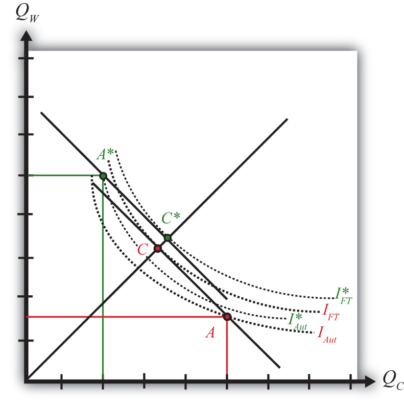

Figure 4.4 "Comparing Free Trade to Autarky" compares autarky and free trade equilibria for the United States and France. The US PPF is given by the red dot at A, while the French PPF is given by the green dot at A∗. We assume both countries share the same aggregate preferences represented by the indifference curves in the diagram.
Figure 4.4 Comparing Free Trade to Autarky
The U.S. autarky production and consumption points are determined where the aggregate indifference curve touches the U.S. PPF at point A. The United States realizes a level of aggregate utility that corresponds to the indifference curve IAut.
The U.S. production and consumption points in free trade are A and C, respectively. The United States continues to produce at A since factors are immobile between industries but trades to achieve its consumption point at C. In free trade, the United States realizes a level of aggregate utility that corresponds to the indifference curve IFT. Since the free trade indifference curve IFT lies to the northeast of the autarky indifference curve IAut, national welfare rises as the United States moves to free trade.
France’s autarky production and consumption points are determined where the aggregate indifference curve touches France’s PPF at point A∗. France realizes a level of aggregate utility that corresponds to the indifference curve IAut∗.
French production and consumption in free trade occurs at A∗ and C∗, respectively. In free trade France realizes a level of aggregate utility that corresponds to the indifference curve IFT∗. Since the free trade indifference curve IFT∗ lies to the northeast of the autarky indifference curve IAut∗, national welfare also rises as France moves to free trade.
This means that free trade will raise aggregate welfare for both countries relative to autarky. Both countries are better off with free trade.
Finally, the aggregate welfare gains from free trade can generally be decomposed into production efficiency gains and consumption efficiency gains. However, since production cannot shift in either country when moving to free trade, there are no production efficiency gains in the immobile factor model. Thus, in the United States, the increase in utility between IFT and IAut shown in Figure 4.4 "Comparing Free Trade to Autarky" represents an increase in consumption efficiency only.
Jeopardy Questions. As in the popular television game show, you are given an answer to a question and you must respond with the question. For example, if the answer is “a tax on imports,” then the correct question is “What is a tariff?”